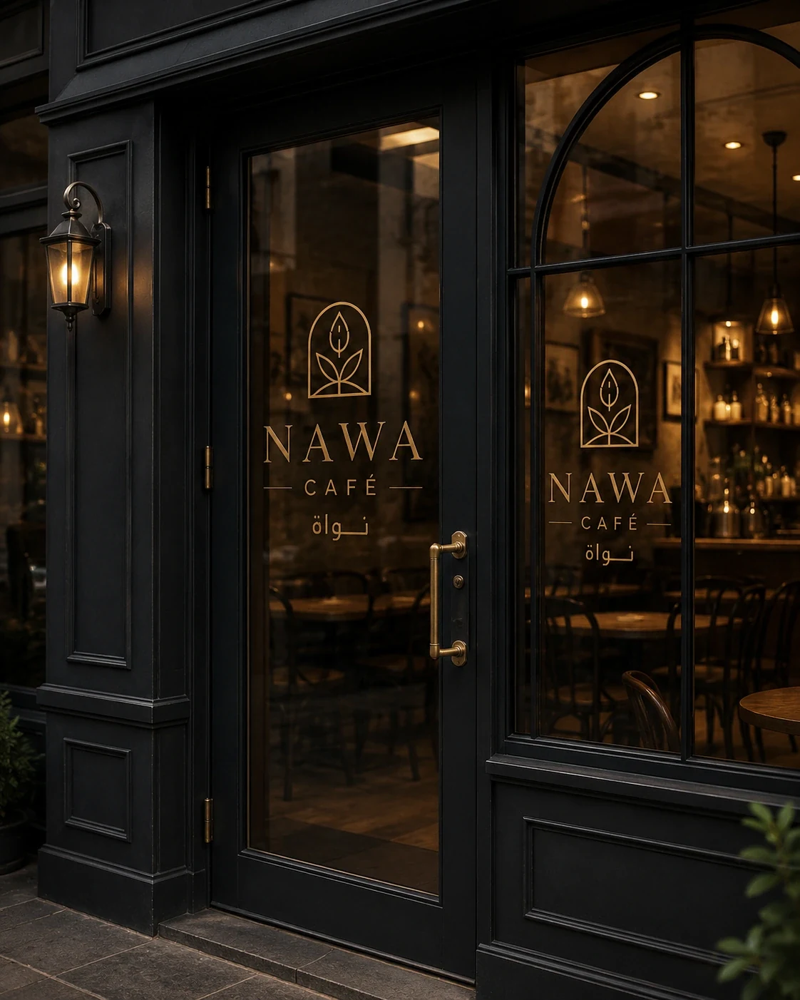
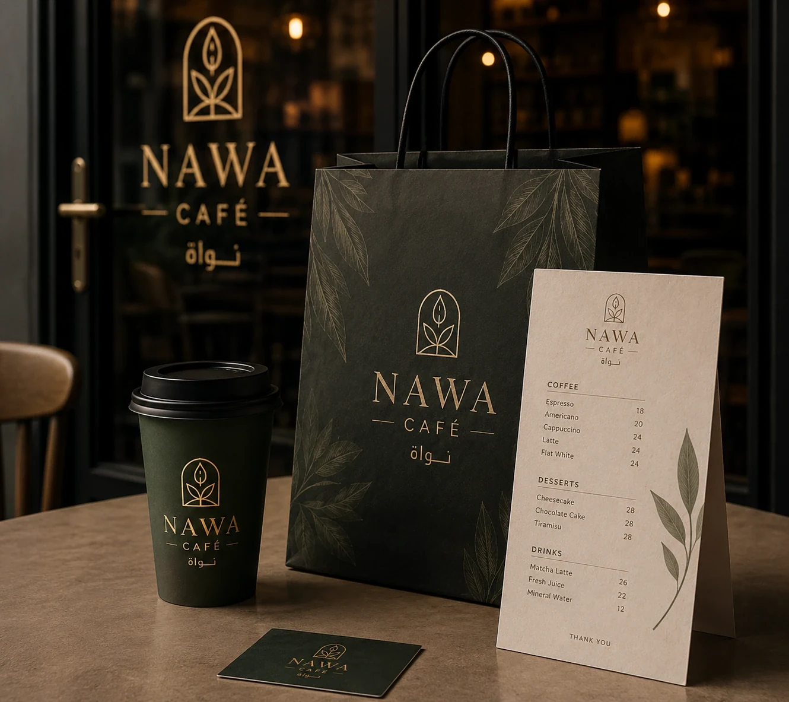

01
Challenge
Build a warm, premium café identity that works both from the street and across the small branded touchpoints handed to customers at the counter.
A warm, refined café identity designed to feel elegant across the façade, glass branding, menu presentation and takeaway packaging.

Concept study created to demonstrate MAQTA’s art direction and production applications.
Build a warm, premium café identity that works both from the street and across the small branded touchpoints handed to customers at the counter.
Quiet luxury through deep tones, refined typography and warm details. The system stays restrained enough to feel intimate rather than overly decorative.
Storefront, glazing, menu, cup, bag and takeaway packaging are treated as different expressions of one connected identity.
A continuous concept experience, from the first impression on the façade to the item the customer carries away, without breaking the visual language.
STOREFRONT · WINDOW VINYL · MENU · PACKAGING

